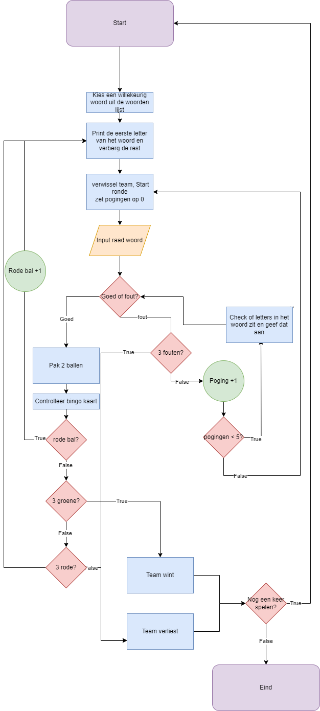

Voorbereidingen van het programma
Flowchart
De eerste vorm van voorbereiding voor de opdracht was het maken van een flowchart, ik heb dit gemaakt met behulp van draw.io.
De flowchart zit simpel in elkaar zodat het leesbaar is voor iedereen, zelfs voor mensen die geen ervaring hebben met programmeren.
Psuedocode
importeer random
terwijl True:
print: welkom bij lingo!
secret_woord = kies een woord uit woordenboek
terwijl True:
print de eerste letter van het woord en verberg de rest behalve de bekende letter
verwissel beurt van team en start ronde
pogingen = 0
terwijl True:
keuze = invoer: raad het 5-letter woord
als keuze gelijk is aan secret_woord:
pak 2 ballen
als de bal rood is:
rode_bal + 1
break
anders als groene bal:
groene_bal + 1
anders als groene_bal gelijk is aan 3:
team wint!
anders als rode_bal gelijk is aan 3:
team verliest!
anders:
controlleer of nummer in bingo kaart zit
als 4 op en rij:
team wint!
anders:
break
anders:
fouten_woorden +1
poging + 1
als fouten_woorden gelijk is aan 3:
team verliest!
als pogingen minder is dan 5:
check of er goede letters in zitten en die laten zien
anders
break
break
nog een keer spelen?
als keuze gelijk is aan nee:
break
Daarna heb ik een Psuedocode gemaakt gebaseerd op de flowchart, wederom is het simpel en makkelijk te lezen,
ook voor mensen die geen ervaringen hebben met programmeren.
Download de voorbereiding
Als je geïntereseerd bent in de voorbereiding van mijn Lingo programma, kun je op de download knop klikken om een .zip file krijgen zowel de flowchart als de psuedocode.